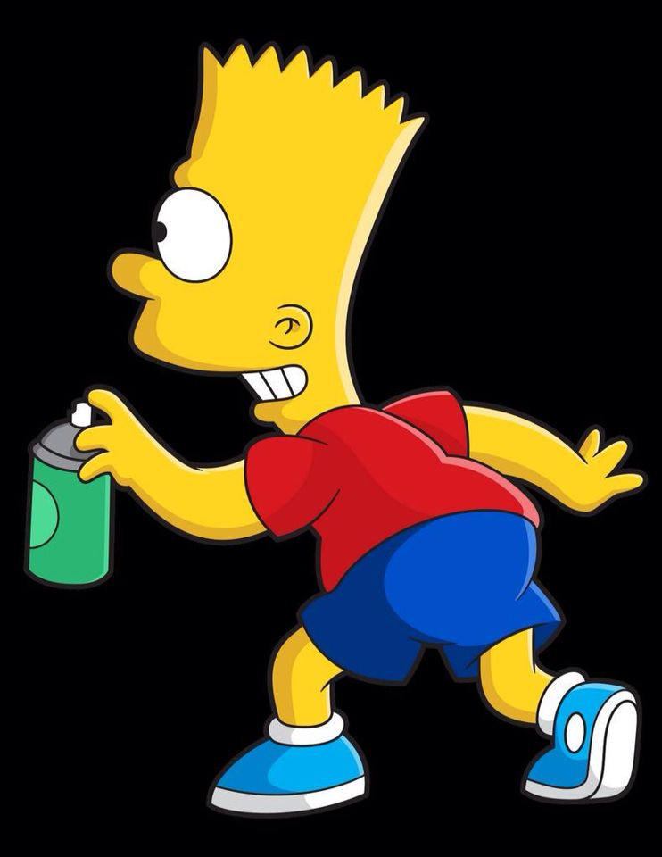

Key Skills
- Team Player
- Self Starter
- Languages: Python, TypeScript, SQL, Java, JavaScript , C/ C++
About me
As a Computer Science and Mathematics student, I’m interested in learning new technologies and applying them to solution-oriented projects. Though I'm passionate about Software Engineering, I love to get involved in as many different areas of a project as I can! When I'm not on a screen, I'm either out with my dog, gaming or playing basketball.
Professional Experience
Smile Digital Health (May 2022 - August 2022): I was a Software Developer working in an Agile Methodology. I implemented features and designs using Angular and Figma as part of an online marketplace system. Furthermore I Managed code quality using SonarQube and implemented end-to-end tests using Cypress
Borealis AI (October 2021 - December 2021): Part of a team, “AI for ASL”, where I contributed to creating a machine learning model that can detect, classify, and translate American Sign Language. This internship allowed me to gain experience in building and training convolutional neural networks and fine-tuning.
Edmonton Federation of Community Leagues (May 2021 - August 20): Developed an interactive database to easily access data regarding Community Leagues, Programs, and Delivery Method. I also embedded Google Maps API into the application, so the closest Community League within a 10km radius would be displayed when the user inputs their desired program and postal code.